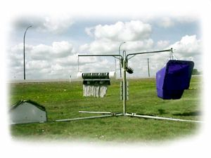

How to solve the problem of fencing through a slough or marshy area that is under water at least part of the year can be a real challenge. Building a fence that would hold and stay in place across an area with rising and falling water levels and even flowing water with ice chunks is difficult.

Features of the Fence Buoys:
• constructed of a 5' X 4" recycled plastic fence post
• float capable of lifting up to 85 lbs and a 65 lb concrete weight fixed to the bottom of the post
• aluminum pin above the float about 2' from the bottom keeps the float from sliding up the post and still leaves about 3' of post on which to fasten your wires
• wires can be stapled to or a hole drilled through
• weight at the bottom of the post keeps it in an upright position and allows it to settle into the mud if the water level drops low enough
• moving water - a 3/16" wire cable can be used rather than the high tensile wire
• a T brace on either side of the wet area helps keep the flexible floating fence in place and also alleviates the problem of stretching the adjoining fence.
• plastic posts work better than wood because they don't swell when wet and they hold the staples as well or better than wood
• beavers are not attracted to the plastic posts and cattle don't like to rub on them
• the Wetland Fence Buoys can be strung across a wet area with a 50' - 150' spacing between posts
Nifty Livestock Equipment Ltd.
1999-2005
About Nifty / Feed Equipment / Livestock ID / Handling Equipment / Dealers Page / Contact Us